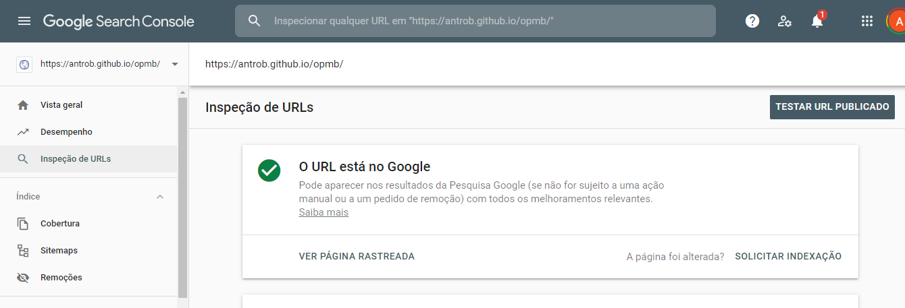

Como saber se o meu site é pesquisável no Google ?
Este video Is my website showing in Google Search?explica como saber.
Technical SEO debruça-se sobre aspectos técnicos de um site que contribuem para o sucesso das medidas tomadas noutras áreas chave do SEO
Este artigo entitulado Tecnical SEO: The Definitive Guide é uma boa referência para o assunto.
Se o meu site ou as minhas páginas não são encontradas pelo Google, não poderei optimizar as pesquisas e todo o meu esforço será em vão.
Daí que é necessário em primeiro lugar verificar e garantir que as páginas do site se encontram Indexadas pelo Google.
Este video Is my website showing in Google Search?explica como saber.
Podemos optar pela criação de um XML Sitemap ou em alternativa Solicitar a Indexação na Inspecção de URLs
Podemos criar um XML Sitemap do site e submetê-lo pelo Google Search Console. Isto envolverá os seguintes passos:
Na prática esta opção não tem resultado muito bem devido a erros inexplicáveis que têm acontecido quando adicionamos o sitemap pelo Google Search Console.
Utilizar a Inspecção de URLs disponível no menu do Google Search Console. Introduzir o URL a inspeccionar. Caso o resultado dê URL não indexado, cliquar em SOLICITAR INDEXAÇÃO.
Esta opção não tem dado problemas, embora tenha o inconveniente de termos de repetir para cada URL que queiramos indexar